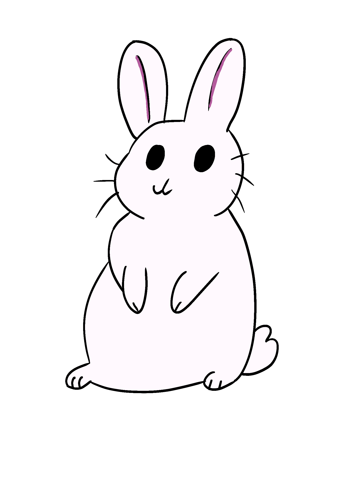

Wielkanoc, znana również jako Pascha, jest jednym z najważniejszych świąt chrześcijańskich, obchodzonym na pamiątkę zmartwychwstania Jezusa Chrystusa. Święta te są obchodzone w różnych krajach na całym świecie, a tradycje związane z Wielkanocą różnią się w zależności od regionu.